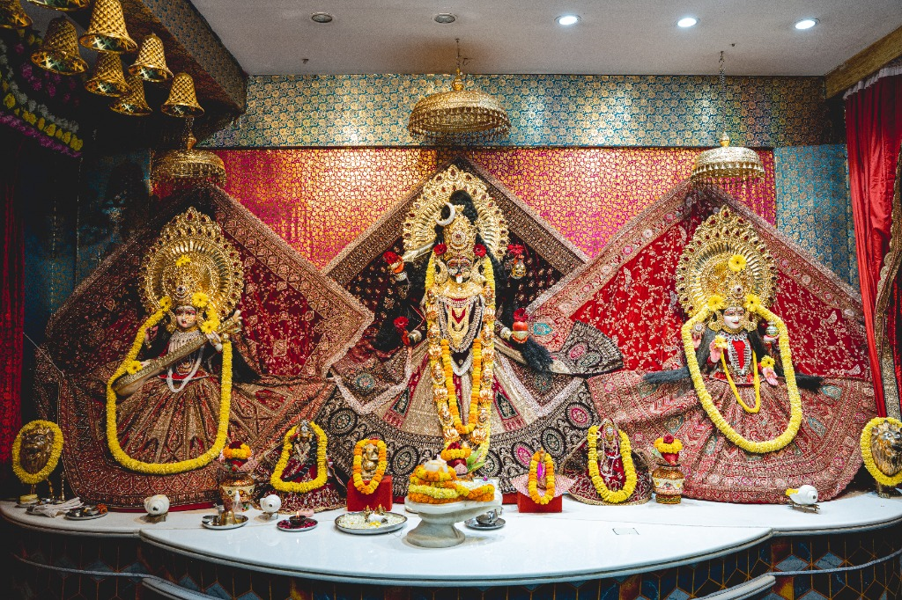
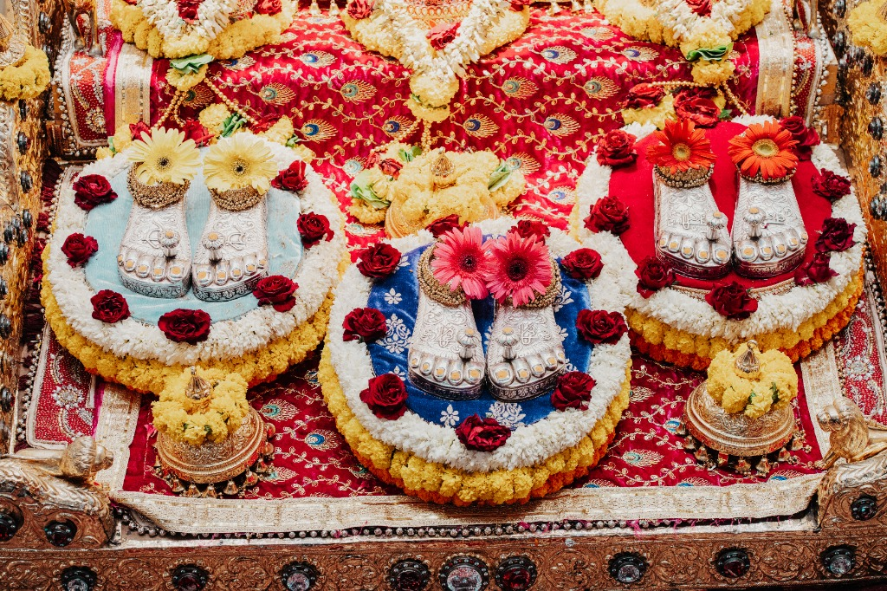

Adi Shakti Maa Vaishno Bhavtarni Mandir
“Welcome to the sacred abode of Maa Vaishno Bhavtarni, a place of faith, devotion, peace, and divine blessings. May Maa guide every step of your journey and fill your life with strength, hope, and positivity.”
Live YouTube Darshan
Experience the divine presence and Aarti of Maa Vaishno Bhavtarni from anywhere in the world.
Note: YouTube livestream URL can be configured in script.js by the Mandir administration.
Temple Opening Timings
Plan your pilgrimage and sacred Darshan according to the daily mandir schedule.
Morning Darshan
Mangala Darshan, Morning Aarti & Daily Pujas
Afternoon Break
Mandir sanctum remains closed for Bhog & विश्राम (rest)
Evening Darshan
Sandhya Aarti, Deepotsav & Evening Darshan (Closing varies between 8:30 PM and 9:00 PM)
Navratri & Special Functions
Continuous Darshan for all devotees during Chaitra & Sharad Navratri Mahotsav.

About Adi Shakti Maa Vaishno Bhavtarni Mandir
Adi Shakti Maa Vaishno Bhavtarni Mandir in Titwala, Maharashtra, is a sacred place dedicated to the Divine Mother. Devotees visit the Mandir to offer prayers, seek Maa's blessings, and find spiritual comfort, courage, and inner peace.
Inspired by the eternal power of Adi Shakti, the Mandir brings devotees together through faith, worship, seva, and festivals. From daily Darshan to the vibrant celebrations of Navratri, every occasion offers an opportunity to deepen devotion and experience the spirit of togetherness.
Faith & Devotion
Daily prayers, sacred Aarti, and continuous chanting creating an atmosphere of deep tranquility and spiritual upliftment.
Seva & Community
Welcoming pilgrims from across Maharashtra and India with devotion, Prasad distribution, and community support.
Sanatan Traditions
Preserving authentic Vedic rites, vibrant Navratri celebrations, and devotional Chowki events for spiritual growth.

Pavitra Charan Paduka Darshan
The sacred silver Charan Paduka (Holy Lotus Feet) of the Divine Mothers, divinely adorned with fresh marigolds, fragrant roses, and golden crowns, showering blessings of courage, peace, and abundance on all visiting devotees.
View in Slide Gallery ❯Festivals & Events
Join us in celebrating auspicious festivals, Chowkis, and devotional gatherings dedicated to Maa Bhavtarni.
Temple Photo Gallery
Immerse yourself in photographs of Maa Bhavtarni's sacred sanctum, mandir architecture, and festival celebrations.
Sacred Mandir Video Darshan
Watch the sacred Aarti, divine sanctum Darshan, and holy ambiance of Maa Vaishno Bhavtarni Mandir.
Mandir Donations & Offerings
Support the sacred work, temple upkeep, daily worship, and festival arrangements of Maa's Darbar.
UPI & QR Code Donation
Scan using any UPI app (GPay, PhonePe, Paytm, BHIM, or your bank app)
Bank Transfer (NEFT / RTGS / IMPS)
Direct bank transfer details for temple seva and offerings
Important Notice: Please verify all bank details carefully before initiating transfers. The Mandir administration never calls asking for OTPs, PINs, or confidential banking information.
Location & How to Reach
Adi Shakti Maa Vaishno Bhavtarni Mandir is situated in the peaceful pilgrimage town of Titwala, Maharashtra.
📍 Temple Address
Adi Shakti Maa Vaishno Bhavtarni Mandir, Titwala, Taluka Kalyan, District Thane, Maharashtra - 421605, India
Pilgrim Note: Titwala is a renowned sacred center located on the Mumbai suburban central railway route. Auto-rickshaws and local transport are readily available from Titwala railway station to the temple area.
Contact & Devotee Information
For Darshan queries, Pooja bookings, Chowki arrangements, or Mandir seva information.
Mandir Address
Titwala, Taluka Kalyan, District Thane, Maharashtra - 421605